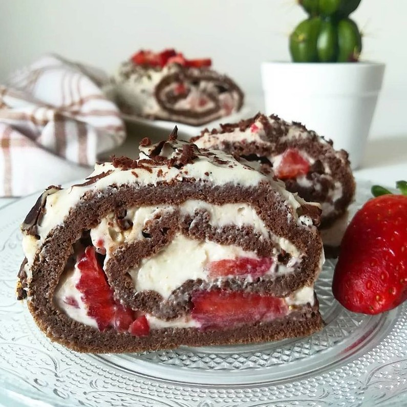

Kakaová roláda podľa @neodolatelnedobre — Normy Jedál
Kakaová roláda🍫
Od @kacul_kaa ❤️
👩🏽🍳Recept:
•Cesto:
3 vajíčka
30g erythritolu
30g hladkej špaldovej múky @babiccina_volba
10g kakaa @droetker_sk
Väčšiu lyžičku PDP do perníka
Sladidlo podľa chuti
•Oddelíme si žĺtka od bielkov. Žĺtka vyšlaháme s erythritolom a bielka vyšlaháme do snehu s lyžičkou erythritolom. Zmiešame múku, kakao, PDP a sladidlo a pridáme zmes k žĺtkom. Premiešame a podľa potreby pridáme mlieko alebo vodu. Na záver opatrne pridáme sneh. Vylejeme mna plech vystlaný papierom. Pečieme na 180 stupňov 8-10 minút. Potom piškótu preklopíme na vlhkú utierku, dáme z nej papier a zrolujeme. Necháme vychladnúť.
•Krém:
350g vaničkového tvarohu
25g vanilkového proteínu
Nasekaná horká čokoláda @lindtcz_sk
Sladidlo podľa chuti
Džem/detská presnidávka
Jahody
•Tvaroh, proteín, sladidlo a čokoládu si vymiešame v hladký krém. Vychladnutý korpus si potrieme detskou presnidávkou/džemom a krémom. Trošku krému si necháme na potretie. Posypeme nakrájanými jahodami a zarolujeme. Celú roládu potrieme a ozdobíme. Dáme na noc do chladničky. Dobrú chuť!❤️
.
.
.
.
#neodolatelnedobre #varimeslaskou #peciemeslaskou #droetker_sk #rolada #kakaovarolada #jahody